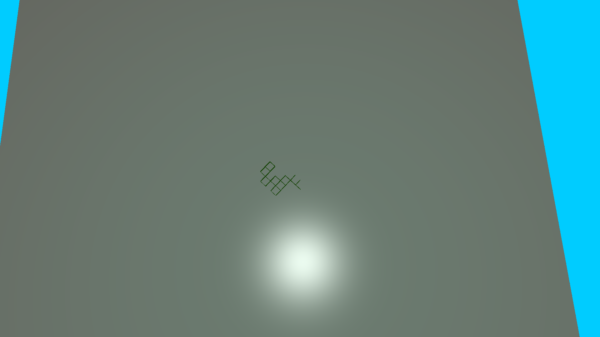
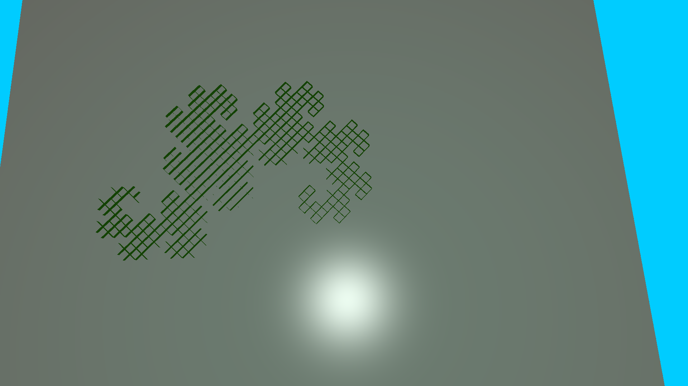
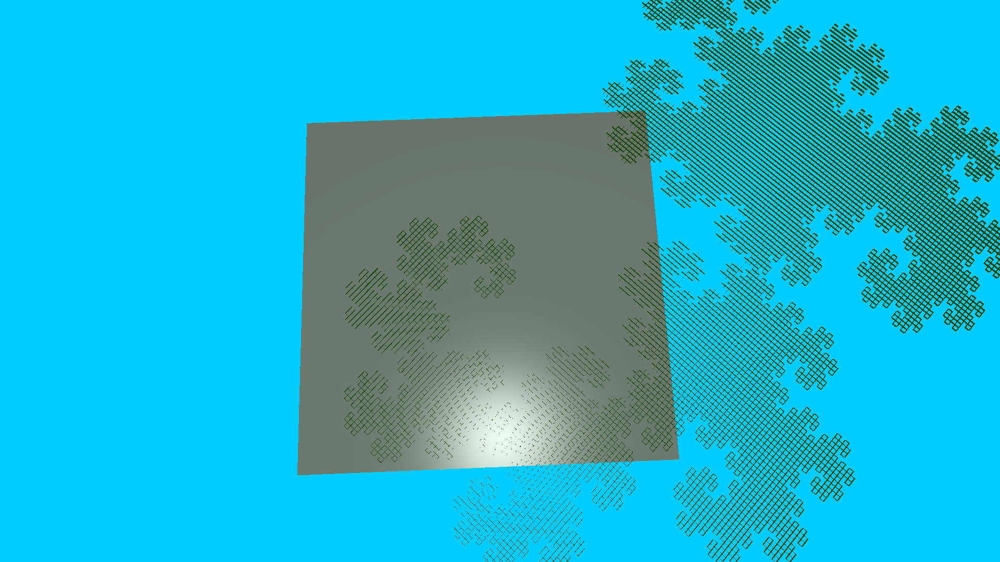

Procedurally generated structures in OpenGL
Time Span : November-December 2014, 2 weeks
Team Size : 1
Technologies : C++ OpenGL
Estimated Development Time : 45 Hours
Source : https://github.com/lejonmcgowan/LSystemGenerator
My project focused mostly on generating and rendering patterns based off of the formal grammer L-systems. L-systems stand for LindenMayer System, named after Biologist Astrid Lindenmayer. This was a system he derived to describe the growth of algae. It has been used as a simple way to represent the growth of many different forms of life.
An L-system is most simply represented as a string of characters. An alphabet describes how to restructure the string when a call for the next level of the system is made. For example let's look at this simple pattern.
Axiom: “F”
Productions: F → FF
An L-system has an initial pattern, called an “axiom”, which is considered level “0”. To go to the next level (1 in this case), scan through the string and replace any pattern seen on the left side of the rules given (called productions) with what is on the right side of the assignment. In this simple case, this will generate 2^(level) F's
Level 1: “FF”
Level 2: “FFFF”
Level 3: “FFFF FFFF”
Level 4: “FFFF FFFF FFFF FFFF”
Level 5: “FFFF FFFF FFFF FFFF FFFF FFFF FFFF FFFF”
etc...
Note that the left hand side of the assignment does not necessarily have to be a single character, but it is preferred for simplicity (this is called a d0l-System, that enforces a unique one-letter left-hand production per L-system).
The power of L-systems comes from its ability to recursively re-write the pattern described to produce a more complex version of the original. This makes this system very favorable for producing plant growth and fractals. These patterns can go on infinitely, but grow at an exponential rate (as seen with the above pattern).
The patterns produced by L-systems can be used to generate a vast array of different designs. This is done by assigning a different task for each letter in the alphabet of the system. For example, if “F” in the above L-system had a task of drawing forward one unit, a level-N l-system here would produce a line that is 2^N units long. More interesting patterns come up as you add to the alphabet and give it more tasks to run. For example, let's look at the famous dragon curve:
angle: 90
axiom: FX
Productions:
X → X+YF+
Y → −FX−Y
Tasks:
F: move forward one unit
+: rotate 90 degrees to the left
-: rotate 90 degrees to the right
X and Y in this case do nothing, and are only used for pattern generations. Below are the results of the dragon curves a certain levels.
when the following system above is implemented, the following patterns are genereated:
(pattern: FX+YF+FX-YF+FX+YF-FX-YF+FX+YF+FX-YF-FX+YF-FX-YF+FX+YF+FX-YF+FX+YF-FX-YF-FX+YF+FX-YF-FX+YF-FX-YFFX+YF+FX-YF+FX+YF-FX-YF+FX+YF+FX-YF-FX+YF-FX-YF+FX+YF+FX-YF+FX+YF-FX-YF-FX+YF+FX-YF-FX+YF-FX-YF[95 characters! And keep in mind this grows exponentially])
(3000+ characters):
(98000+ characters!)
It should be of note that many of these patterns rely on a constant “angle” to rotate at when producing the system. It is amazing how much one can do by manipulating only this ange and these rules. Let's look at another famous example, the well-known fractal called the Koch snowflake:
angle: 60
axiom: F++F++F
Productions: F → F-F++F-F
Tasks:
F: move forward one unit
+: rotate 60 degrees to the left
-: rotate 60 degrees to the right
Last thing of note for basic L-stsyems is branches. In the pattern, they are usuall represented as '[' and ']', for pushing an popping the current state, respectively. This system often used to generate the branches of a tree, or to spread grass out radially from a source. Here is an example of the latter:
angle: 45 degrees
axiom: F
Productions: F → F[+F][-F]F
Tasks:
F: move forward one unit
+: rotate left
-: rotate right
[: push state
]: pop state
The number of different patterns to generate with these simple rules is linitless!
3d, with my current structure, is merely more sets of productions to add. In addition to worrying only about rotating left and right (on the z-axis until now, assuming an xy-plane), the lsystem will have to keep track of the other 4 axes of rotation as well. An example of this is in my “Great Tree” file.
I took the liberty of adding some extra functionality to give a simple animation. This changes the angle given, in order to affect the yaw, pitches, and rolls all at once. In this case the wind shifts the tree +/- 10 degrees
Tree at -10 degrees of angle
Tree at +10 degrees of angle
I took the liberty of adding some extra functionality to give a simple animation. This changes the angle given, in order to affect the yaw, pitches, and rolls all at once.
new Lsystem → initialize axiom and shape to use → define productions → change level → render onto screen.
The Lsystem class here contains a collection (vector) of Rule classes. A rule class has an “in” character (the left-hand side of the production) an “out” string (the right side), and a function pointer to define the task to do. The latter here is especially important in the structure, and allows the user control of how the L-system can be structured. After these are done, the level of the lsystem to be generated can be done through key strokes (l and shift+l, in this program's case).
When it comes time to render shapes to the screen, all the lsystem has to do is iterate through the produced pattern and call the task assigned to its letter in the Rule class.
The Lsystem takes on a class member for a class known as a “ShapeManager”. This class manages a Shape (the model being rendered) and its transformations throughout space. The job of this class is to keep track of and make it easy to transform the shape, without worrying about the order of the transformations. The class also keeps track of the Blinn-Phong material being used in addition to the actual shape. This makes is very easy to change out the shading and shape used for the rendering.
Unfortunately, the current system of producing and rendering shapes is very expensive here. Note that these L-systems grow at an exponential pace (as is the nature of life and fractals). Thus, the computer will quickly find it taxing as it renders thousands of shapes at once on higher levels, quickly binging the number of frames per second down to a crawl.